Kule Pro.
Kule Pro, bir işletmenin stok, sipariş, tedarikçi ve fatura verisinden her gün karar çıktısı üreten bir karar destek aracıdır. Ne yaptığını, nasıl çalıştığını ve neyin ölçüldüğünü anlatır.
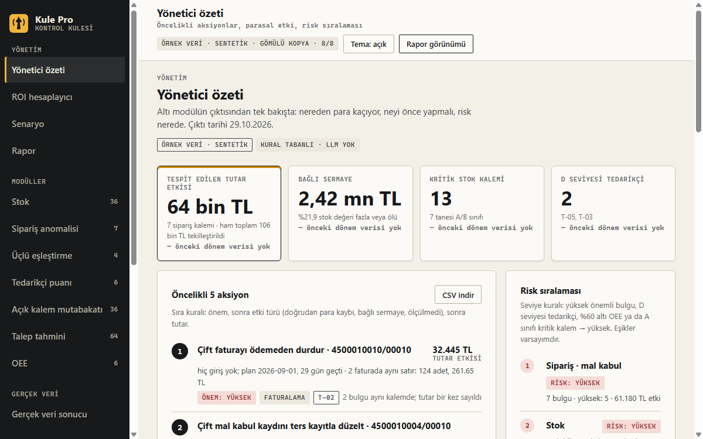
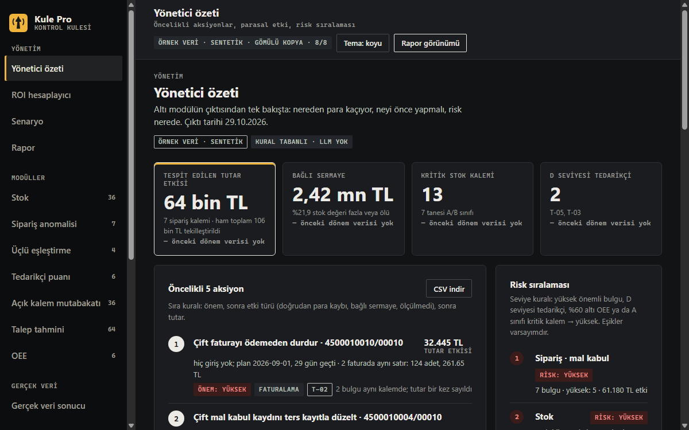
Kule Pro nedir?
Kule Pro, bir işletmenin stok, sipariş, tedarikçi ve fatura dosyalarını okuyan bir karar destek aracıdır. Her sabah hangi kalemin bitmek üzere olduğunu, hangi siparişte tutarsızlık bulunduğunu ve hangi tedarikçinin güvenilmez göründüğünü hazır bir liste olarak verir. Çekirdeği kural tabanlı, test edilebilir hesaplardan oluşur; varsayılanda hiçbir modül dil modeli çağırmaz.
Hangi sorunu çözer?
Stok, sipariş, mal kabul ve fatura çoğu işletmede ayrı tablolarda kontrol edilir. Bir hata genellikle fark edildiğinde maliyeti çoktan oluşmuş olur. Kule Pro bu kontrolleri tek bir günlük çıktıda toplar: kritik ve ölü stok, sipariş–mal kabul–fatura tutarsızlıkları, tedarikçi performansı ve sipariş önerisi.
Aracı kullanacak kişiler farklı işlere bakar.
- PlanlayıcıStok ve talep tarafını izler.
- Satın almaSipariş, fatura ve tedarikçi tarafını izler.
- YöneticiÖzet ve maliyet tarafını izler.
Nasıl çalışır?
Veri bir kez okunur, satır satır denetlenir, modüllerden geçer ve karara dönüşür.
- CSV / .xlsxişletmenin dışa aktardığı dosyalar
- Doğrulamaher satır girdi sözleşmesine göre
- ModüllerSQLite, 7 kural tabanlı analiz
- Kararönem puanı ve sipariş önerisi
- Veriİşletmenin dışa aktardığı CSV ve .xlsx dosyaları okunur. SAP tarzı dışa aktarımlar bir eşleme dosyasıyla Kule biçimine çevrilir.
- DoğrulamaHer satır bir girdi sözleşmesine göre denetlenir. Bozuk satır sessizce kaybolmaz; nedeni birlikte saklanır ve dosyanın veri kalitesi skoruna yansır.
- Saklama ve analizTemiz veri SQLite'a yazılır. Her çalıştırma bir anlık görüntü bırakır; iki görüntü arasındaki fark çıkarılabilir. Analiz modülleri aynı çıktı biçimini üretir.
- Karar ve sunumKarar motoru bulguları parasal etkilerine göre önem puanına çevirir ve sipariş önerisi çıkarır. Sonuçlar komut satırı, REST API, tarayıcı paneli ve günlük ya da haftalık raporlar olarak sunulur.
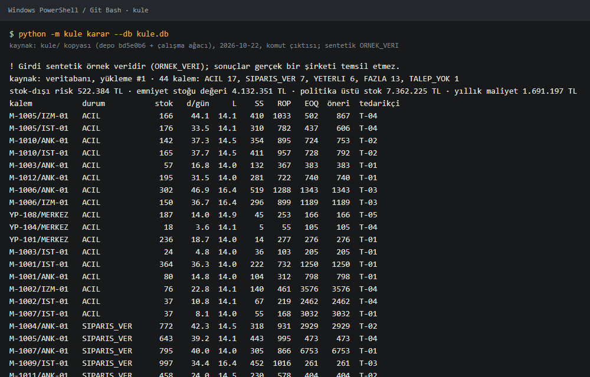
Ajan orkestratörü (ayrı bileşen)
Kule'nin modüllerini araç olarak kullanan çok ajanlı bir akıştır. Planlayıcı soruyu alt görevlere böler. Analist modülleri çağırır, bulguyu yorumlar ve sayılarını bir iddia bloğuna yazar. Denetçi ise bir model değil, koddur: iddia bloğundaki her sayıyı Kule'nin kendi hesabıyla karşılaştırır ve tutmayan sayıyı reddeder.
Denetçi yalnız iddia bloğunu kontrol eder; düz metindeki sayılar yalnızca Kule verisinde var olup olmadıklarına bakılarak denetlenir. Yan etkili araçlar (örneğin bir kayıt yazmak) insan onayı olmadan çalışmaz. Her adım bir iz olarak kaydedilir ve iz görüntüleyicide açılabilir.
- PlanlayıcıSoruyu alt görevlere böler
- AnalistModülleri çağırır, iddia bloğunu yazar 2. deneme
- Denetçi (kod)Sayıyı Kule'nin hesabıyla karşılaştırır 1. red2. kabul
- Onay kapısıYan etkili adımı insan onaylar Onaylandı
Red: Denetçi Analist'e geri gönderir
- Planlayıcı soruyu alt görevlere böler.
- Analist modülleri çağırır ve sayıları iddia bloğuna yazar.
- Denetçi reddeder: iddia 58,0, Kule'nin hesabı 36,3.
- Analist ikinci denemede sayıyı düzeltir.
- Denetçi kabul eder: sayı Kule'nin hesabıyla eşleşiyor.
- Onay kapısı: yan etkili adım insan onayıyla çalışır.
Örnek akış eval'deki bir vakadan alındı (T-03 tedarikçi skoru: iddia 58,0, Kule 36,3).
Modüller
Kule Pro yedi modülden oluşur. Her biri bir işi yapar ve aynı biçimde çıktı verir.
Panelde modül ekranları
Stok
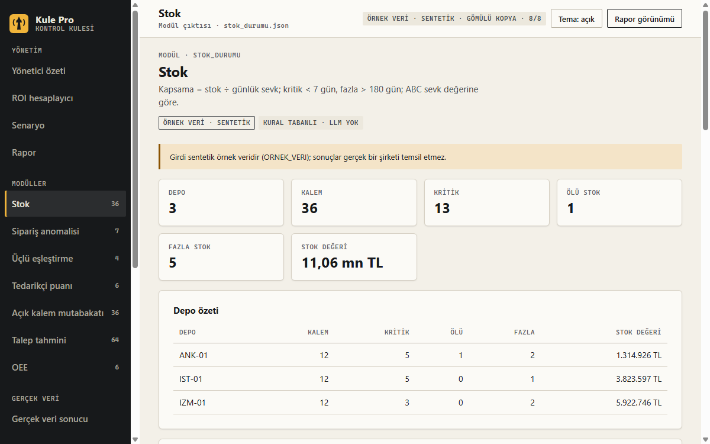
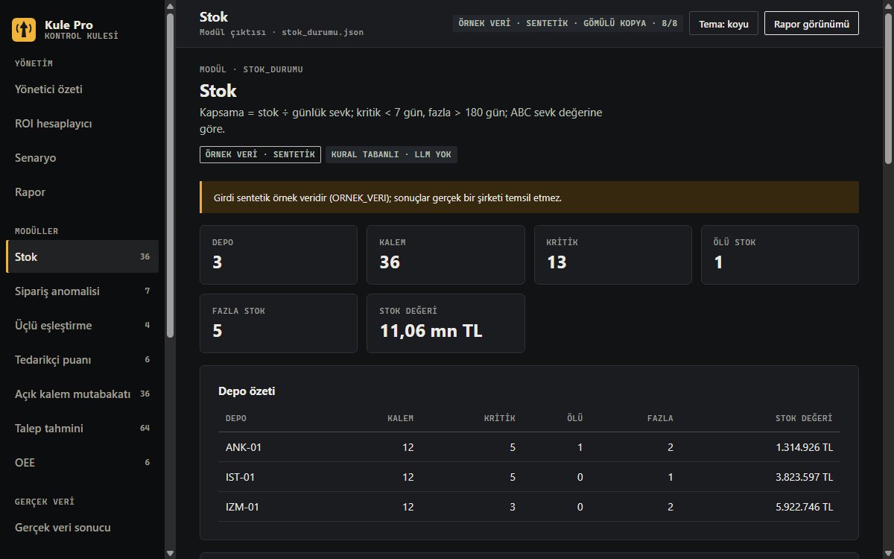
Sipariş anomalisi
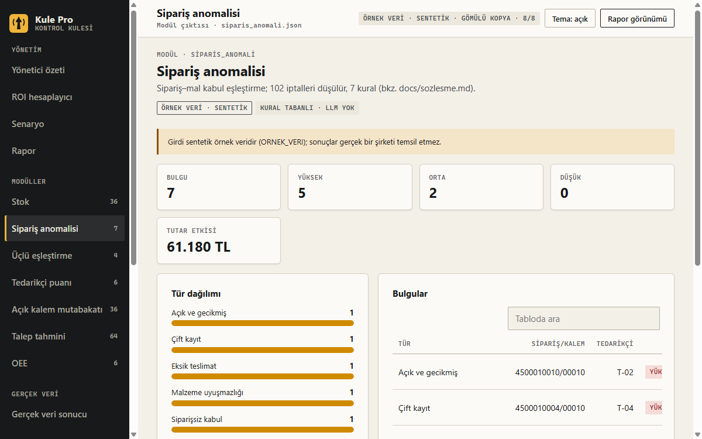
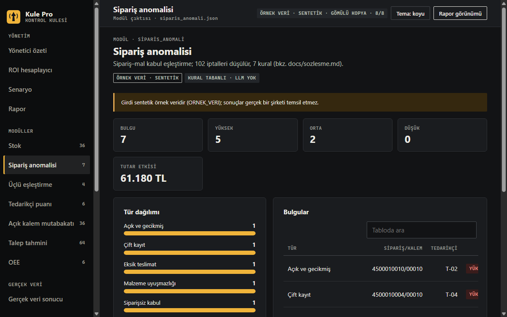
Üçlü eşleştirme
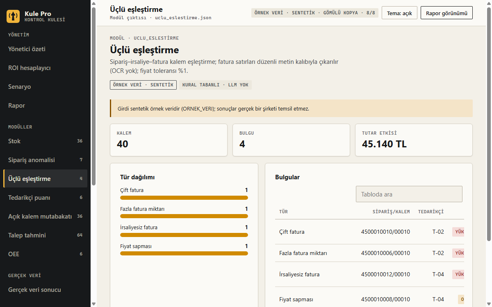
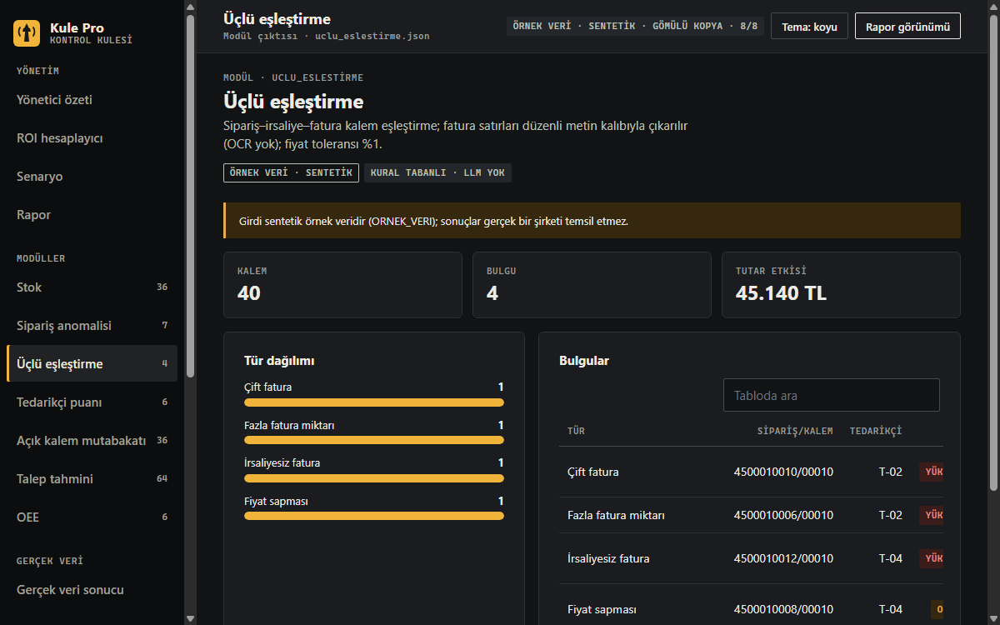
Tedarikçi
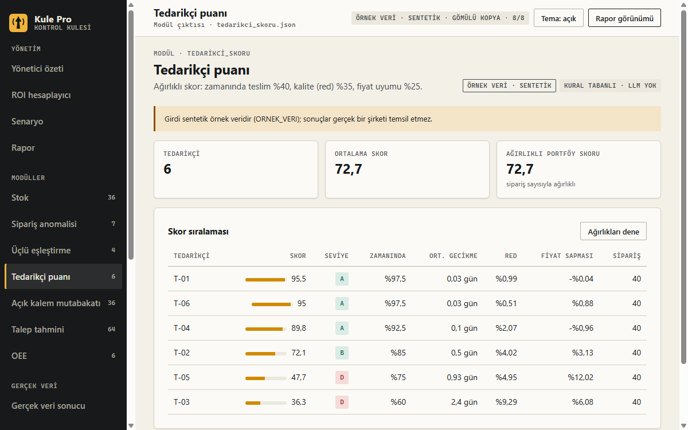
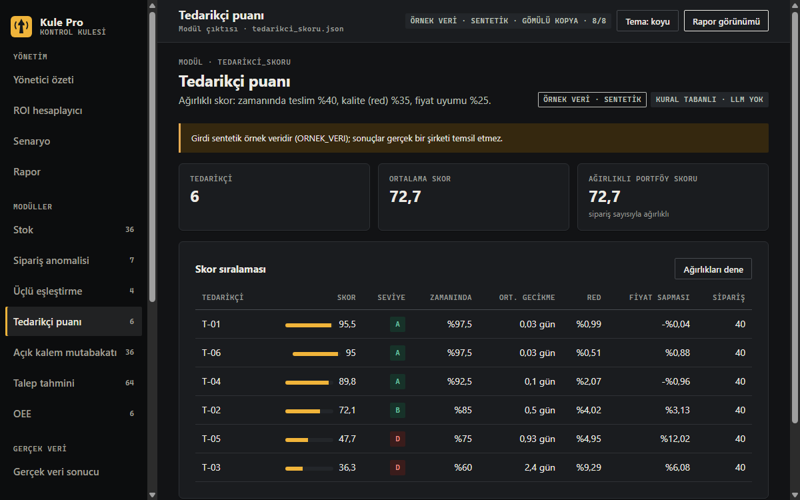
Talep tahmini
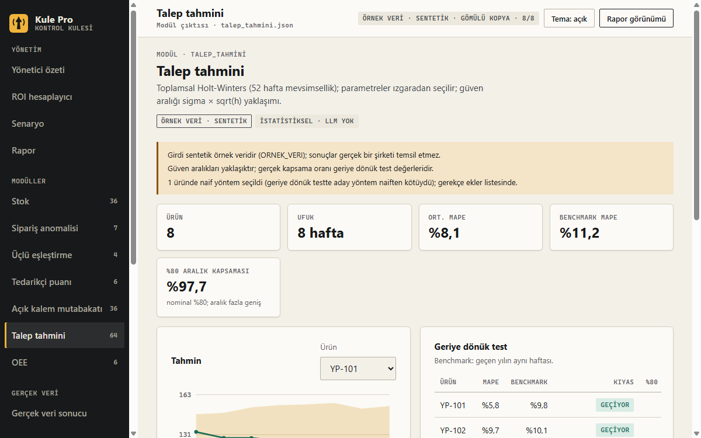
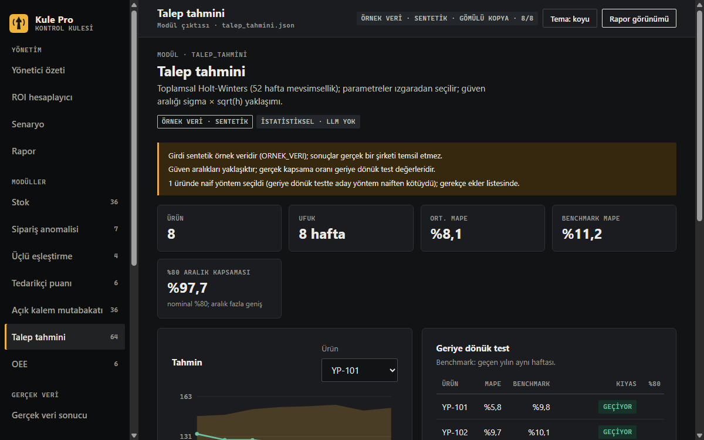
Ekranlar panelin kendisinden alındı. Panel ve komut satırı şu an Türkçe; modül ekranlarındaki veriler sentetiktir.
Ne kanıtlandı?
411 Python testKule için 411 Python testi geçiyor; Node: 58 test, 58 geçti, 0 atlandı
Ajan orkestratörü için 87 birim testi var. Son koşu 22 Ekim 2026 tarihli ve 0 başarısız test içeriyor.
Ajan orkestratörünün değerlendirme seti 46 vakadan oluşur. Kasetten oynatılır, bu yüzden model kalitesini ölçmez. Ölçüt, kontrol ve kapsam vakalarının 41'i de geçti (41/41); 5 bilinen açık vaka gözlendi ve kapanmadı.
claude-haiku-5-5 ile planlanan 40 koşudan 38'i kaydedildi; 37'si tamamlandı, 1'i kota nedeniyle kesildi, 2'si yapılmadı. Soruşturma akışında 20 koşunun 16'sı kabul edildi (%80; %95 Wilson aralığı 0,584–0,919). Ölçümler ön-kayıtlıdır; önceden yazılan hedefler vaat değildir ve sonuç ne çıkarsa o yayımlanır.
Bu örneklem küçüktür (soruşturma 20 koşu). Bir model kalitesi iddiası değildir.
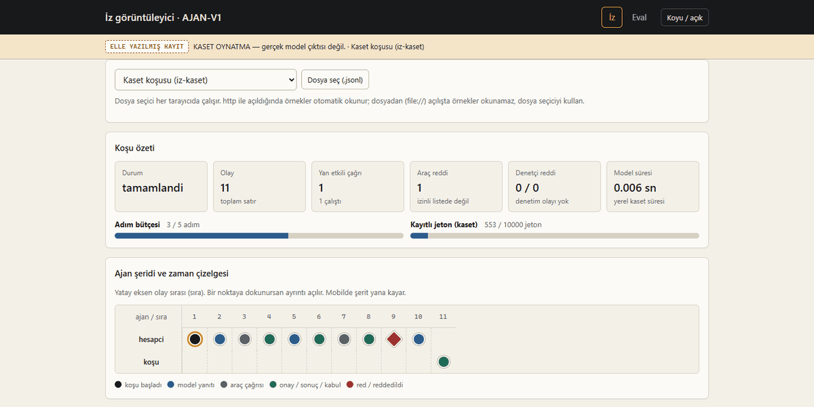
Sınırlar
- Gerçek firma verisi yokGerçek bir firmanın verisiyle ölçülmedi. Ölçümler sentetik veriyle (tohum 42) ve herkese açık DataCo Smart Supply Chain verisiyle yapıldı. Mal kabul, irsaliye, fatura ve üretim verisi için lisansı uygun gerçek veri bulunamadı; bu girdiler ölçülmedi.
- Bilinen açık 1Eval'de düz metin içindeki sayının bağlamı denetlenmiyor. "2 kritik kalem" yazılan vaka kabul ediliyor, oysa gerçek sayı 3.
- Bilinen açık 2Enjeksiyon metnini modelin kendi sözleriyle yeniden ifade ettiği durumlarda sızıntı denetimi yakalamadı (6 vakanın 0'ı).
- ROI varsayıma bağlıROI hesaplayıcının sonucu kullanıcının kendi varsayımlarına bağlıdır. Bu yüzden tek bir TL rakamı sunulmaz; varsayım tablosu açıktır.
Nasıl denenir?
Sık sorulan sorular
Kule Pro bir yapay zekâ mı?
Hayır, karar çıktıları kural tabanlıdır ve test edilebilir. Ajan orkestratörü ayrı bir bileşendir ve dil modeli kullanır; onun iddiaları da Kule'nin hesabıyla denetlenir.
Gerçek bir firmanın verisiyle çalıştı mı?
Hayır. Ölçümler sentetik veriyle ve herkese açık DataCo verisiyle yapıldı.
Kaynak kodu neden yayımlanmıyor?
Kaynak kod bu depoda yayımlanmıyor. Bunun yerine test kanıtları, eval sonuçları, ölçüm çıktıları ve ajan izleri açık.
Ne gerekiyor?
Bu sayfalar ve demo için yalnız bir tarayıcı. Kule'nin kendisi Python 3.10 veya üstüyle çalışır; yalnız standart kütüphane kullanılır, ek paket kurmak gerekmez.
Hangi dillerde?
Bu sayfalar Türkçe ve İngilizce. Kule'nin paneli ve komut satırı çıktıları şu an Türkçe.